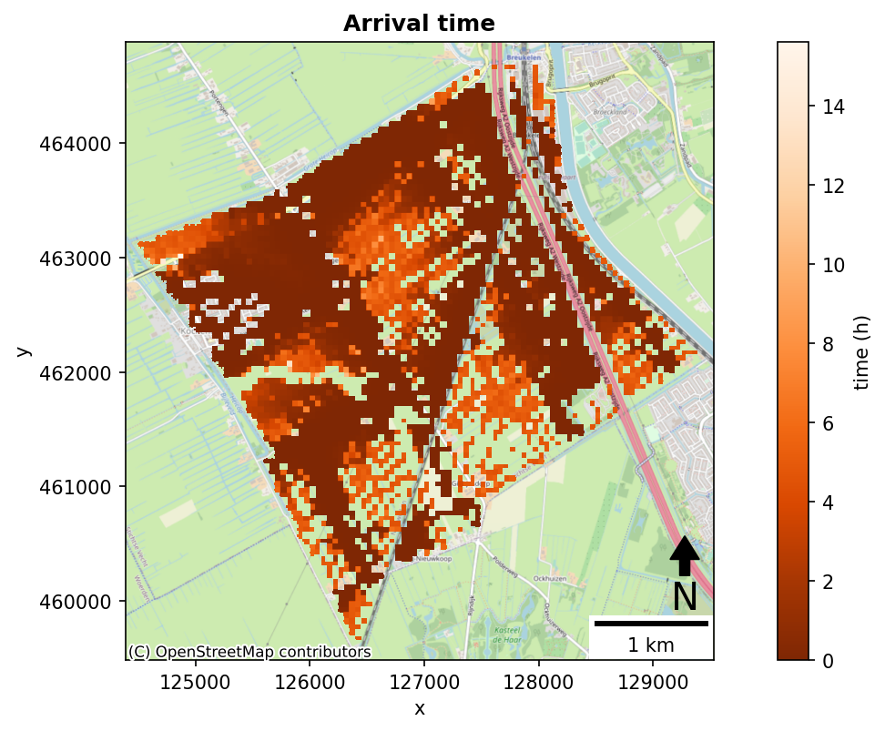
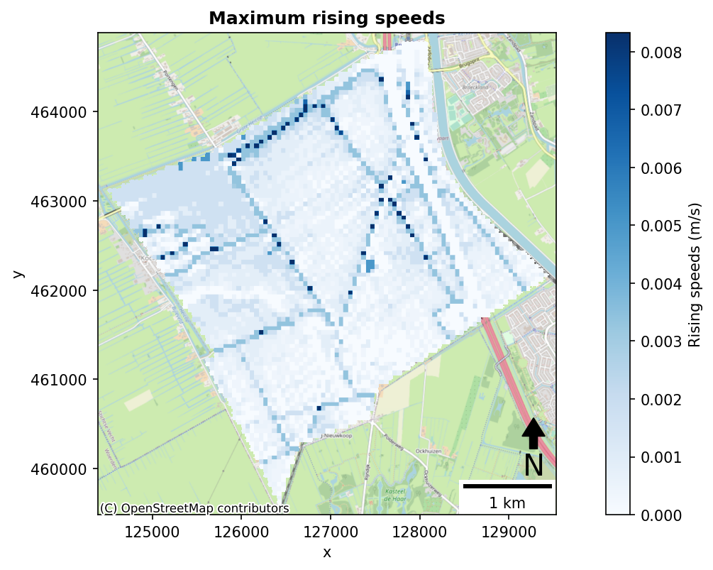
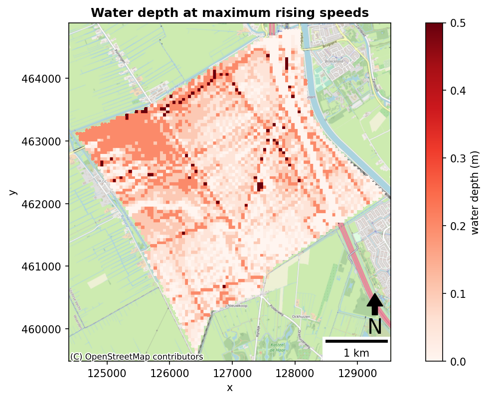

Analyzing arrival time and maximum rising speed by reading a clm-file#
The clm.nc file is read and variable is extracted. Next, the mesh data is manipulated, converted to a raster and saved to a .tiff.
Manipulation of the mesh data includes obtaining the arrival time, the maximum rising speed, and the water height h_mrs at which this happen.
1. Import modules#
import os
import sys
from pathlib import Path
import numpy as np
currentdir = os.path.dirname(os.getcwd())
sys.path.append(currentdir + r"/HydroLogic_Inundation_toolbox")
sys.path.append(currentdir + r"/HydroLogic_Inundation_toolbox/Readers")
from flowmeshreader import load_meta_data, load_classmap_data, mesh_to_tiff
from inundation_toolbox import arrival_times, height_of_mrs, rising_speeds
from plotting import raster_plot_with_context
2. Set input and output paths#
# set paths
input_file_path = currentdir + r"/HydroLogic_Inundation_toolbox/Data/Tol/input/1PT10_clm.nc"
output_file_path = currentdir + r"/HydroLogic_Inundation_toolbox/Data/Tol/output"
Path(output_file_path).mkdir(exist_ok=True)
3. Set output raster options#
# raster options
resolution = 10 # m
distance_tol = 36 # m
interpolation = r"nearest"
4. Read meta-data and set variable to read from clm.nc file#
print(load_meta_data(input_file_path))
variable = r"Mesh2d_waterdepth"
['Mesh2d_flowelem_ba', 'Mesh2d_flowelem_bl', 'Mesh2d_s1', 'Mesh2d_waterdepth', 'Mesh2d_ucmag', 'Mesh2d_ucdir']
5. Load classmap and map data from NetCDF file#
# load mesh coordinates and data from netCDF
clm_data, map_data = load_classmap_data(input_file_path, variable, method="lower")
6. Compute arrival times, maximum rising speed, and waterheight at maximum rising speed#
# Compute inundation specific variables
t_arrival = arrival_times(clm_data, np.timedelta64(60, "s"), time_unit="h", arrival_threshold=3)
s_rising = rising_speeds(map_data, time_step = np.timedelta64(60, "s"))
max_s_rising = np.amax(s_rising, axis=0)
h_mrs = height_of_mrs(map_data, s_rising)
7. Plot Arrival time#
# Plot arrival times
_, _, _ = mesh_to_tiff(
t_arrival,
input_file_path,
output_file_path + r"/arrival.tiff",
resolution,
distance_tol,
interpolation=interpolation,
)
fig, ax = raster_plot_with_context(
raster_path = output_file_path + r"/arrival.tiff",
epsg = 28992,
clabel = "time (h)",
cmap = "Oranges_r",
title = "Arrival time",
)

8. Plot Maximum rising speeds#
# Plot maximum rising speeds
_, _, _ = mesh_to_tiff(
max_s_rising,
input_file_path,
output_file_path + r"/max_rising.tiff",
resolution,
distance_tol,
interpolation=interpolation,
)
fig, ax = raster_plot_with_context(
raster_path = output_file_path + r"/max_rising.tiff",
epsg = 28992,
clabel = "Rising speeds (m/s)",
cmap = "Blues",
title = "Maximum rising speeds",
)

9. Plot water depth at maximum rising speeds#
# Plot water depth of maximum rising speed
_, _, _ = mesh_to_tiff(
h_mrs,
input_file_path,
output_file_path + r"/h_mrs.tiff",
resolution,
distance_tol,
interpolation=interpolation,
)
fig, ax = raster_plot_with_context(
raster_path = output_file_path + r"/h_mrs.tiff",
epsg = 28992,
clabel = "water depth (m)",
cmap = "Reds",
title = "Water depth at maximum rising speeds",
)
